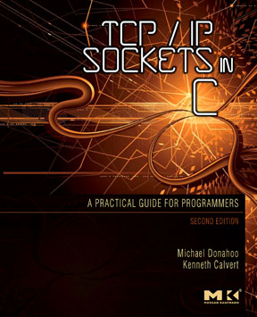
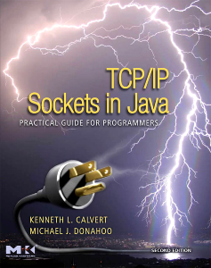
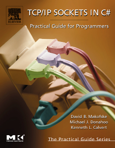

Michael J. Donahoo
Professor
School of Engineering & Computer Science
One Bear Place #97141
Baylor University
Waco, TX. 76798-7356
(254) 710-6836 (Voice)
(254) 710-3889 (Fax)
jeff at jeffdonahoo dot com
GPG Key
[BIOGRAPHY]
[CLASSES]
[SERIES/BOOKS]
[PUBLICATIONS]
[OTHER]
Biography
Michael ("Jeff") Donahoo received his B.S. and M.S. degrees from
Baylor University in 1991 and 1993, respectively.
He received his Ph.D. in Computer Science from the
College of Computing at the Georgia Institute
of Technology in 1998. Upon graduation, he returned to Baylor University
to join the faculty of the School of Engineering
and Computer Science.
A major impediment to large-scale information access involves the
difficulties in handling the burgeoning demands on information
dissemination technologies. To truly achieve scale requires the
implementation of application-specific routing services that enable
efficient use of network resources, such as concast, multicast,
broadcast, subcast, and anycast. Unfortunately, the deployment of
such services at the network-layer seems unlikely due to volatile
policy and security barriers; therefore, Jeff's most recent work focuses
on circumventing these obstacles by providing appropriate services at
the application-layer in overlay network topologies. While this
approach promises significant improvement in overall scalability for
network and system resources, the effective use of such networking
services is by no means automatic. Jeff's research focuses on the
interplay among routing services, transport protocols, and information
dissemination problem domains with the intent to develop and point the
way to technologies that address the challenge of extending
traditional information dissemination applications to a world with
ubiquitous information expectations.
Classes
Series and Books
The Practical Guide Series,
published by Morgan-Kaufmann, targets
both the student and professional who have a general background in
programming. The series consist of very focused, relatively
fast-paced tutorial/reference books on various computing technologies.
The goal of these books is to give the busy professional or student
all of the elements and instruction needed to begin working with
specific technologies. Jeff created the series to provide focused,
inexpensive supplementary texts for classroom use. The series
(originally called the Pocket Series) started in 2000 and currently
includes several books, many of which Jeff co-authored. Jeff is also the
series editor.
|

|
TCP/IP Sockets in C: Practical Guide for Programmers, Second Edition (ISBN:
978-0-12-374540-8) by Michael J. Donahoo and Kenneth L. Calvert
Originally published as: The Pocket Guide to TCP/IP Sockets: C Version (ISBN: 1-55860-686-6)
Author Web Site
Publisher Web Site
|
|

|
TCP/IP Sockets in Java™: Practical Guide for Programmers, Second
Edition(ISBN:
978-0-12-374255-1) by Kenneth L. Calvert and Michael J. Donahoo
Author Web Site
Publisher Web Site
|
|

|
TCP/IP Sockets in C#: Practical Guide for Programmers (ISBN: 978-0-12-466051-9) by
David Makosfske, Michael Donahoo, and Kenneth Calvert
Publisher Web Site
|
|
|
SQL: Practical Guide for Developers (ISBN: 978-0-12-220531-6) by
Michael J. Donahoo and Gregory Speegle
Author Web Site
Publisher Web Site
|
Peer Reviewed Articles
- Tomas Cerny, Filip Sedlisky, Michael J Donahoo. On Isolation-driven Automated Module Decomposition. Proceedings of the Conference on Research in Adaptive and Convergent Systems, pgs. 302-307, 2018.
- Tomas Cerny, Michael J Donahoo. Survey on Compromise-Defensive System Design. International Conference on Information Science and Applications, pgs. 513-521, 2018.
- Tomas Cerny, Michael J Donahoo, Michal Trnka. Contextual Understanding of Microservice Architecture: Current and Future Directions. ACM SIGAPP Applied Computing Review, 17 (4), pgs. 29-45, 2018.
- Tomas Cerny, Michael J Donahoo. Second Screen Engagement of Event Spectators. Advances in Human-Computer Interaction, 2018.
- Tomas Cerny, Michael J Donahoo, Jiri Pechanec. Disambiguation and Comparison of SOA, Microservices and Self-Contained Systems. Proceedings of the International Conference on Research in Adaptive and Convergent Systems, RACS 2017, Krakow, Poland, September 20-23, 2017. ACM 2017, ISBN 978-1-4503-5027-3, pgs. 228-235, 2017.
- Tomas Cerny, Michael J. Donahoo. On energy impact of web user interface approaches. In Cluster Computing, Vol. 19, No. 4, pgs. 1853-1863, 2016.
- Tomas Cerny, Michal Trnka, Michael J. Donahoo. Towards Shared Security through Distributed Separation of Concerns. In Proceedings of the International Conference on Research in Adaptive and Convergent Systems, pg. 169-172, 2016.
- Tomas Cerny, Michael J. Donahoo. Survey on Second Screen Systems. In 6th International Conference on IT Convergence and Security (ICITCS), 2016.
- Karel Cemus, Tomas Cerny, Lubos Matl, Michael J. Donahoo. Aspect, Rich, and Anemic Domain Models in Enterprise Information Systems. In Proceedings of SOFSEM: Theory and Practice of Computer Science, 2016.
- Tomas Cerny, Michael J. Donahoo. Survey on Concern Separation in Service Integration. In Proceedings of SOFSEM: Theory and Practice of Computer Science, 2016.
- Tomas Cerny, Michael J. Donahoo. Impact of Remote User Interface Design and Delivery on Energy Demand. In Proceedings of the International Conference on Information Science and Security (ICISS), 2015.
- Karel Cemus, Tomas Cerny, Michael J. Donahoo. Evaluation of Approaches to Business Rules Maintenance in Enterprise Information Systems. In Proceedings of the Conference on Research in Adaptive and Convergent Systems, 2015.
- Karel Cemus, Tomas Cerny, Lubos Matl, Michael J. Donahoo. Enterprise Information Systems: Comparison of Aspect-driven and MVC-like Approaches. In Proceedings of the Conference on Research in Adaptive and Convergent Systems, 2015.
- Tomas Cerny, Michael J. Donahoo. On Separation of Platform-independent Particles in User Interfaces. In Proceedings of Cluster Computing, 2015.
- Tomas Cerny, Miroslav Macik, Michael J. Donahoo, Jan Janousek. On Distributed Concern Delivery in User Interface Design. In Computer Science and Information Systems, 2015.
- Lubos Matl, Tomas Cerny, Michael J. Donahoo. Effective Manycast Messaging for Kademlia Network. In Proceedings of 30th ACM/SIGAPP Symposium On Applied Computing, 2015.
- Karel Cemus, Tomas Cerny, Michael J. Donahoo. Automated Business Rules Transformation into a Persistence Layer. Procedia Computer Science Journal, Elsevier, 2015.
- Tomas Cerny, Michael J. Donahoo. Separating out Platform-independent Particles of User Interfaces. In Proceedings of International Conference on Information Science and Applications, LNEE, Springer, 2015.
- Tomas Cerny, Lubos Matl, Karel Cemus, Michael J. Donahoo. Evaluation of Separated Concerns in Web-based Delivery of User Interfaces. In Proceedings of International Conference on Information Science and Applications, LNEE, Springer, 2015.
- Tomas Cerny, Miroslav Macik, Michael J. Donahoo, Jan Janousek. Efficient Description and Cache Performance in Aspect-Oriented User Interface Design. In Proceedings of the 2014 Federated Conference on Computer Science and Information Systems, ACSIS, volume 2, pages 1667–1676. IEEE Computer Society Press and Polish Information Processing Society, 2014.
- Tomas Cerný, Cemus,K., Michael J. Donahoo, Song, E. Aspect-driven, Data-reflective and Context-aware User Interfaces Design. ACM SIGAPP Applied Computing Review. 2013, vol. 13, no. 4, p. 53-65. ISSN 1559-6915.
- Tomas Cerný, Michael J. Donahoo, Song, E. Towards Effective Adaptive User Interfaces Design. In: RACS '13 Proceedings of the 2013 Research in Adaptive and Convergent Systems. New York: ACM, 2013, p. 373-380. ISBN 978-1-4503-2348-2.
- Tomas Cerny, Chalupa V., Michael J. Donahoo. Impact of User Interface Generation on Maintenance. In Computer Science and Automation Engineering (CSAE), 2012 IEEE International Conference on [CD-ROM]. Beijing: IEEE, 2012, p. 621-625. ISBN 978-1-4673-0088-9.
- Tomas Cerny, Chalupa V., Michael J. Donahoo. Towards Smart User Interface Design. In Information Science and Applications (ICISA), 2012 International Conference on [CD-ROM]. New York: IEEE, 2012, p. 1-6. ISBN 978-1-4673-1402-2.
- Tomas Cerny, P. Praus, S. Jaromerska, L. Matl, Michael J. Donahoo. Towards a Smart, Self-scaling Cooperative Web Cache. In SOFSEM 2012: Theory and Practice of Computer Science. New York: Springer, 2012, vol. 7147, p. 443-455. ISBN 978-3-642-27659-0.
- Tomas Cerny, P. Praus, S. Jaromerska, L. Matl, Michael J. Donahoo. Cooperative Web Cache. Proceedings of 18th International Conference on Systems, Signals and Image Processing. Sarajevo: University of Sarajevo, 2011, p. 85-88. ISBN 978-9958-9966-1-0.
- Tomas Cerny, Michael J. Donahoo. How to Reduce Costs of Business Logic Maintenance. Proceedings of IEEE International Conference on Computer Science and Automation Engineering. Beijing: IEEE, 2011, p. 1-6. ISBN 978-1-4244-8728-8.
- Tomas Cerny, Michael J. Donahoo. FormBuilder: A Novel Approach to Deal with View Development and Maintenance. SofSem 2011 Proceedings of Student Research Forum. Bratislava: OKAT, 2011, p. 16-34. ISBN 978-80-88720-17-1.
- Tomas Cerny, Michael J. Donahoo. A Tool for Evaluation and Optimization of Web Application Performance. In Proceedings of 44th Spring International Conference MOSIS'X. Ostrava, p. 49-54. ISBN 978-80-86840-51-2, 2010.
- Tomas Cerny, Michael J. Donahoo. Evaluation and Optimization of Web Application Performance Under Varying Network Conditions. In Proceedings of 44th Spring International Conference MOSIS'X, p. 41-48. ISBN 978-80-86840-51-2, 2010.
- Tomas Cerny, Michael J. Donahoo. Performance Optimization for Enterprise Web Applications Through Remote Client Simulation. In Proceedings of the 7th EUROSIM Congress on Modeling and Simulation, Praha: Czech and Slovak Simulation Society, 2010.
- Tomas Cerny, Michael J. Donahoo. MetaMorPic: Self-contained Photo Archival and Presentation. In Information Systems Development, Heidelberg: Springer, 2010.
- Paul T. Edelman, Michael J. Donahoo, David B. Sturgill. Secure Group Communications for Delay-Tolerant Networks. IEEE International Conference for Internet Technology and Secured Transactions, 2010.
- Michael J. Donahoo, Daniel Hernandez. Scheduling for Receiver-driven Multicast Flow Control. Proceedings of International Conference on Communications in Computing, June, 2002.
- Wai Gen Yee, Michael J. Donahoo, Edward Omiecinski, Shamkant B. Navathe. Scaling Replica Maintenance in Intermittently Synchronized Databases. Proceedings of CIKM, November, 2001.
- J. William Murdock, Ashok K. Goel, Michael J. Donahoo, Shamkant Navathe. A Framework for Method-Specific Knowledge Compilation from Databases. Journal of Intelligent Information Systems, 17(1): 5-21, November 2001.
- J. William Murdock, Ashok K. Goel, Michael J. Donahoo, Shamkant Navathe. Method-Specific Knowledge Compilation, Chapter in Data Mining for Design and Manufacturing: Methods and Applications, Ed. Dan Braha, Vol. 3 in the Massive Computing Series, Kluwer Adademic Publishers, ISBN: 1-4020-0034-0.
- Michael J. Donahoo, Sunila R. Ainapure. Scalable Multicast Representative Member Selection. Proceedings of IEEE INFOCOM, March, 2001.
- Wai Gen Yee, Michael J. Donahoo, Shamkant B. Navathe. A Framework for Server Data Fragment Grouping to Improve Server Scalability in Intermittently Synchronized Databases. CIKM 2000, November, 2000.
- Michael J. Donahoo, Gary N. Boone, Tucker Balch. On the Directional Correlation of Axial Rotation in Inverted Felines and Planetary Spin: Coriolis Revisited, The Journal of Irreproducible Results, v. 44, n. 5-6, pg. 37-9, 1999.
- Michael J. Donahoo, M. H. Ammar, E. W. Zegura. Multiple-channel Multicast Scheduling for Scalable Bulk-data Transport. Proceedings of the INFOCOM'99, March, 1999.
- Michael J. Donahoo. Application-based Enhancements to Network-Layer Multicast. Ph.D. Dissertation, Georgia Institute of Technology, September, 1998.
- Michael J. Donahoo, M. H. Ammar, E. W. Zegura. Multiple-Channel Multicast Scheduling for Scalable Bulk-data Transport. Tech. Report GIT-CC-98-30, Georgia Institute of Technology, December, 1998.
- J. W. Murdock, A. K. Goel, M. J. Donahoo, S. Navathe. Method Specific Knowledge Compilation: Towards Practical Design Support Systems. Proceedings of the Fifth International Conference on Artificial Intelligence and Design (AID'98), Lisbon, Portugal, July 20-23, 1998.
- Sameer Mahajan, Michael J. Donahoo, Shamkant Navathe, Mostafa Ammar, Sanjoy Malik. Grouping Techniques for Update Propagation in Intermittently Connected Databases. Proceedings of Fourteenth International Conference on Data Engineering, pg. 46-53, Feb. 1998.
- Ellen W. Zegura, Kenneth L. Calvert, Michael J. Donahoo. A Quantitative Comparison of Graph-Based Models for Internet Topology. Transactions on Networking, pg. 770-783, Dec. 1997.
- Michael J. Donahoo, Ellen W. Zegura. Center Selection and Migration for Wide-area Multicast Routing. Journal of High-Speed Networking, 6(2), 1997.
- M. J. Donahoo, J. W. Murdock, A. K. Goel, S. Navathe, E. Omiecinski. From Data to Knowledge: Method Specific Transformations. Proceedings of the Tenth International Symposium on Methodologies for Intelligent Systems (ISMIS'97), Charlotte, NC, October 15-18, 1997.
- Michael J. Donahoo, Ellen W. Zegura. Core Migration for Dynamic Multicast Routing. Proceedings of ICCCN '96, Sept 1996.
- Kenneth L. Calvert, Ellen W. Zegura, Michael J. Donahoo. Core Selection Methods for Multicast Routing. Proceedings of ICCCN '95.
- Shamkant B. Navathe, Michael J. Donahoo. Towards Intelligent Integration of Heterogeneous Information Sources. Proceedings of the 6th International Workshop on Database Re-engineering and Interoperability, March 1995.
- Gregory Speegle, Michael J. Donahoo. Resolving Result Set Contention in Heterogeneous Library Information Systems. Technical Report CS-1993-1, Baylor University, July 1993.
- Michael J. Donahoo, Query Optimization in Heterogeneous Library Information Systems. Master's Thesis, Baylor University, May 1993.
- Gregory Speegle, Michael J. Donahoo. Using Statistical Sampling for Query Optimization in Heterogeneous Library Information Systems. Proceedings of the 21st Annual Computer Sciences Conference, pg. 475-482. February 1993.
Other